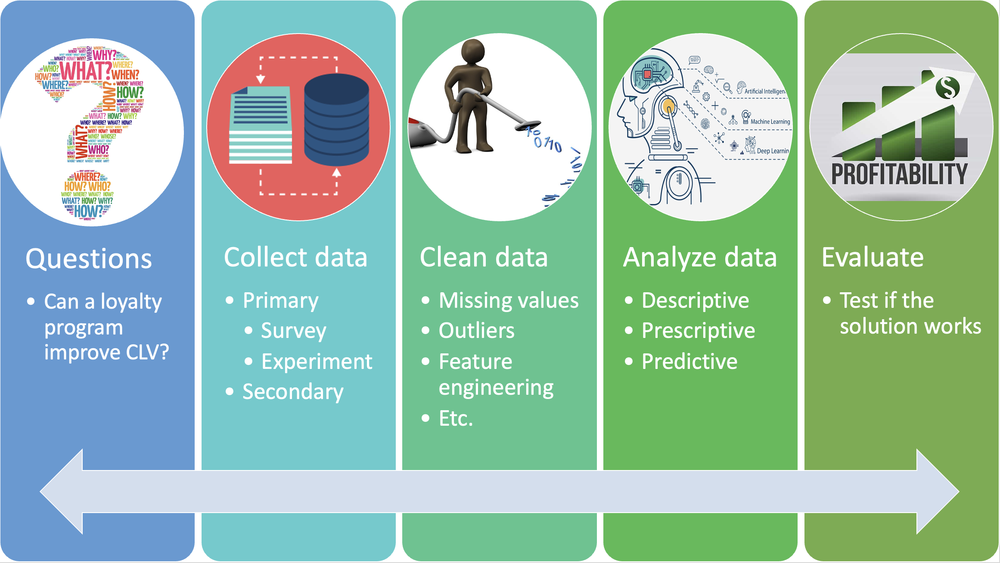

Class 4 Data Wrangling with R Part I
1 Overview
1.1 Class Objectives
Understand the major steps to conduct data analytics
Data collection: Learn how to collect first-hand data
Data cleaning: Learn how to use the
dplyrpackage to collect, load, and clean dataData analysis: Learn how to conduct descriptive analytics
2 Data Analytics Workflow
2.1 Overview
2.2 Collect Data
Primary Data: Data that are generated by the researcher himself/herself, surveys, interviews, experiments, specially designed for understanding and solving the research problem at hand.
Secondary Data: Existing data generated by the company’s or consumer’s past activities, as part of organizational record keeping.

2.3 Collect Data: Marketing Surveys
In a marketing survey, we typically would like to solicit the following
purchase intention
willingness to pay (WTP)
shopping basket
share of wallet (SoW)
demographics
Let’s see an example of how to design a simple marketing survey!
Useful supplementary readings if you need to design marketing surveys
3 Data Wrangling with R
3.1 Data Frames
Data Frame is the R object that we will deal with most of the time in the MSc program. You can think of
data.frameas a spreadsheet in excelEach row stands for an
observationEach column stands for a
variable; each column should have a unique name.Each column must contain the same data type, but the different columns can store different data types.
- compare with matrix?
Each column must be of same length, because rows have the same length across variables.
3.2 Install and Load the dplyr package
- In R, we will be using the
dplyrpackage for data cleaning and manipulation.
- Load the package
- Load a built-in dataset called
mtcarsusingdata()
To browse the whole dataset, we can simply click the dataset in the environment
- It may takes time to view a huge dataset
3.3 Subset Rows Based on Conditions: filter
We can use
filter()to extract rows that meet logical criteria.- We can also add multiple criteria separated by comma
3.4 The Pipe Operator %>%
3.4.1 Pipe Operator
%>%, or pipe operator, will forward a value, or the result of an expression, into the next function call/expression.
3.5 Sort Rows: arrange
arrange() orders the rows of a data frame by the values of selected columns.
- The default is by ascending order; for descending order, put a minus sign before the variable.
3.6 Generate New Variables: mutate
mutate() adds new variables and preserves existing ones
3.7 Important Tips
- Each dplyr operation does not overwrite the original data frame, therefore, we must assign the object back if we wish to overwrite the previous data frame.
- Exercises:
find car models with
gearequal to 4 andmpglarger than 15reorder the above dataset by
wtfrom large to small.generate a new column which computes the ratio of
mpgtowt
3.8 After-Class Exercise
Data camp dplyr exercise
Read “Preliminary Customer Analyses” dataset, and try to solve the case questions using the techniques learned today